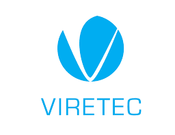
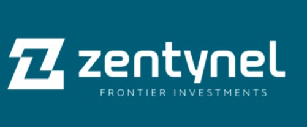
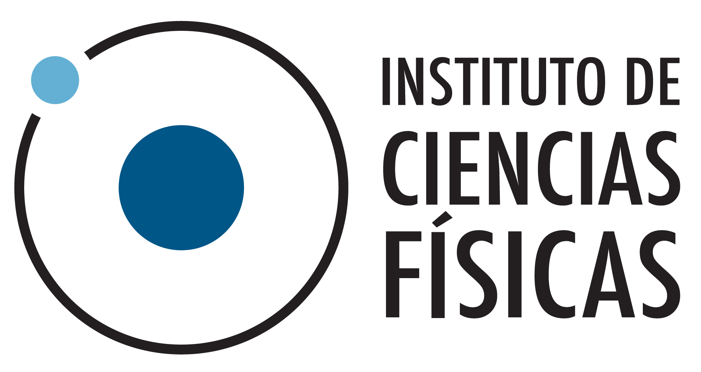
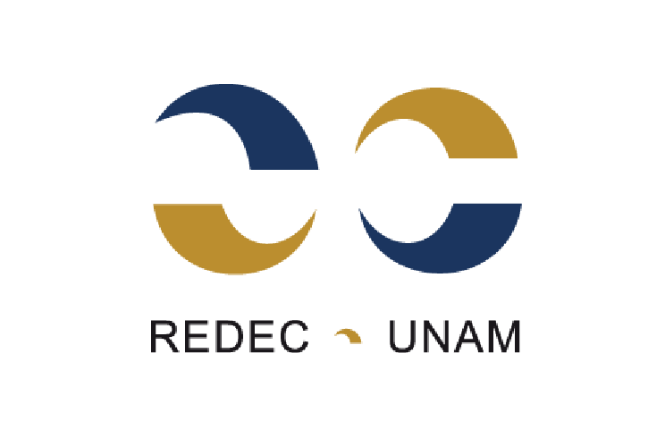

Taller Híbrido | 16 Horas de Formación
Del Laboratorio al Mercado
Transforma tu investigación en un proyecto de emprendimiento
Inicia
6 de Junio, 2026
Transforma tu investigación en un proyecto de emprendimiento
Inicia
6 de Junio, 2026
Este taller de 16 horas está diseñado para investigadores y estudiantes de posgrado en áreas CTIM con interés en desarrollar un proyecto de emprendimiento, abordando la transición desde el laboratorio hasta la comercialización tecnológica.
A través de la metodología Lean Startup para validación de modelos de negocio, guiado por académicos de UNAM y UAEMor que ya han fundado sus propias empresas, crearás tu Business Model Canvas con retroalimentación enfocada en conectar con fondos de apoyo.
Biotecnología, ingenierías, salud, materiales, física y más.
Presencial en ICF-UNAM Cuernavaca y remota vía Zoom/Slack.
Certificación avalada por la Red de Educación Continua de la UNAM.
De científico a emprendedor: genera valor más allá de los artículos y citas.
No dejes que se quede en el papel. Rompe la barrera y transita de la investigación a la acción en la Economía del Conocimiento. Aprende a transformar tu desarrollo tecnológico en valor tangible.
Para académicos consolidados y jóvenes investigadores, el emprendimiento es una vía probada para generar alternativas financieras para sus laboratorios, fuera de los fondos tradicionales.
Llena el vacío de la cultura emprendedora en la academia. Obtén herramientas prácticas y la ruta crítica para transformar tu conocimiento especializado en un modelo de negocio validado frente a clientes reales.
Horas de trabajo
Entrevistas Mínimas
Modalidad
Pitch Final
4 Sesiones intensivas diseñadas para validar y presentar tu modelo de negocios.
¿Por qué y cómo emprender en México? El recorrido de Agro&Biotecnia.
Dr. Enrique Galindo Fentanes
Introducción a Lean Startup: El método científico a los negocios.
Dr. Antonio Juárez Reyes
Testimonios de Fuego: Emprendedores Científicos
Dr. Alejandro Torres Gavilán & Dr. Lorenzo Martínez
Flipped Classroom: Instrucciones para el primer borrador Canvas.
Mtra. Rita García
Producto Mínimamente Viable (MVP) y Customer Discovery.
Dr. Gerardo Corzo
Profundizando en el Canvas: Propuesta de Valor y Segmentos de clientes.
M. en C. Rita García
Marco Normativo: Ley de Ciencia y Tecnología e implicaciones.
Dra. Alma Cristal Hernández Mondragón
Práctica de Pitch y definición del plan de entrevistas semanal.
Propiedad Intelectual: Patentes, modelos de utilidad y secreto industrial.
M.A. Mario Trejo Loyo
Testimonios de Fuego: Emprendedoras Científicas.
Dra. Margarita Tecpoyotl Torres & Dra. Erika Chavira Suárez
Fondos para "Deep Tech" (GRIDX, Viretec, Zentynel).
Teresa de León, Andrés Gómez, Martha Laura López
Clínica de Proyectos: Revisión de avances en entrevistas y Pitch.
M. en C. Rita García
Presentación Final de Proyectos y Evaluación ante instructores y fondos invitados.
Panel Especializado
Oportunidades del ecosistema en Morelos.
Mtra. Patricia Pérez
Mesa Redonda: Próximos pasos (MVP, incubadoras).
Cierre de curso y entrega de reconocimientos.
Aprende directamente de emprendedores, expertos en PI y especialistas de fondos tecnológicos.

Coordinadora y docente
Cofundadora de Teotlina. Coordinadora de Innovación con Ciencia. Cuenta con 14 años en la industria de alimentos, experiencia docente y liderazgo en innovación. Enfocada en biotecnología y alimentos sustentables.

Coordinador y docente
Cofundador de Q-dot Analytical Solutions, investigador titular en el ICF-UNAM. Es físico por la UNAM con doctorado en Manchester. Combina ciencia de frontera con emprendimiento tecnológico.
.jpg)
Coordinador y docente
Investigador titular IBt-UNAM. Emérito del SNI. Fundó Agro&Biotecnia, desarrollando el primer biofungicida foliar mexicano. Premio Nacional de Ciencias y Artes.

Coordinador
Investigador titular IBt-UNAM en bioprocesos. Sólida trayectoria formando talento en LATAM e impartiendo cursos de emprendimiento. Cofundador de Biopolymex y MicroIn.

Docente
Investigador IBt-UNAM, bioprospección de moléculas. Ha transformado ciencia de frontera en innovación aplicada como cofundador de Peptherapeutics y Arakion.

Docente
Experta en política científica, profesora en CINVESTAV. Ha impulsado normativa, creado el primer programa de asesores científicos y cofundado AMEXAC.

Docente
Secretario de Gestión y Transferencia Tecnológica en IBt-UNAM. Ha gestionado +200 patentes y negociado +600 convenios para llevar la innovación al mercado.

Ponente
Especialista en biocatálisis y emprendedor. Cofundador de SciTherm y Applied Biotec, empresa galardonada con el Premio Nacional de Tecnología e Innovación.

Ponente
Director General de Corrosión y Protección. Empresario e innovador. Ha liderado +500 proyectos en energía, capacitado a +6000 profesionales y autor de 47 patentes.

Ponente
Fundadora de Inntecver, investigadora UAEMor y líder en bioingeniería. Con 7 patentes, impulsa la innovación aplicada y forma talento científico-emprendedor.

Ponente
Tecnóloga biomédica e investigadora en DOHaD. Fundadora de TESSIUM, startup de innovación en salud. Impulsa soluciones para mejorar salud desde los primeros mil días.

M.C. Patricia Pérez
El CEMITT, institución del CCyTEM de Morelos, tiene como misión impulsar el ecosistema de emprendimiento, transferencia e innovación conectando academia y sector productivo.


Teresa de León, Andrés Gómez, Martha Laura López
Directores y representantes de fondos especializados en tecnología "Deep Tech". Contaremos con la presencia de Viretec, Zentynel y GRIDX, quienes analizarán el potencial de escalabilidad y la propuesta de valor.
Organizan y Respaldan

ICF-UNAM Innovación con Ciencia
Innovación con Ciencia
Asegura tu lugar en este taller de alto impacto y comienza a construir tu startup.
Posgrado y licenciatura
Investigadores UNAM / UAEMor
Público CTIM e interesados

Este taller cuenta con el reconocimiento y aval de la Red de Educación Continua de la UNAM (REDEC-UNAM). Se otorgarán certificados de Aprobación a quienes presenten su pitch final y cumplan con las mentorías, o certificados de Asistencia.